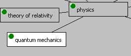

The active item is the item having the focus in the Relations browser. Thus, it is displayed with white background. In addition, the active item's content is shown in the Inspector view.
The active item is either the central item or one of it's related items.
The active item in the Relations browser
You can move the focus in the Relations browser either using the arrow keys or by clicking the item with your mouse.